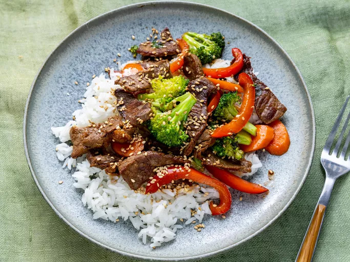

Quick Beef Stir-Fry

Description
This dish is packed with veggies, beef, and saucy flavors for a
weeknight dinner warrior that checks all the boxes. Served with rice or
lo mein noodles, this will be the best beef stir-fry you've ever made.
Ingredients
- 2 tablespoons vegetable oil
- 1 pound beef sirloin, cut into 2-inch strips
- 1 1/2 cups fresh broccoli florets
- 1 red bell pepper, cut into matchsticks
- 2 carrots, thinly sliced
- 1 green onion, chopped
- 1 teaspoon minced garlic
- 2 tablespoons soy sauce
- 2 tablespoons sesame seeds, toased
Steps
- Gather all ingredients.
-
Heat vegetable oil in a large wok or skillet over medium-high heat;
cook and stir beef until browned, 3-4 minutes.
-
Move beef to the side of the wok and add broccoli, bell pepper,
carrots, green onion, and garlic to the center of the wok. Cook and
stir vegetables for 2 more minutes.
- Serve hot and enjoy!